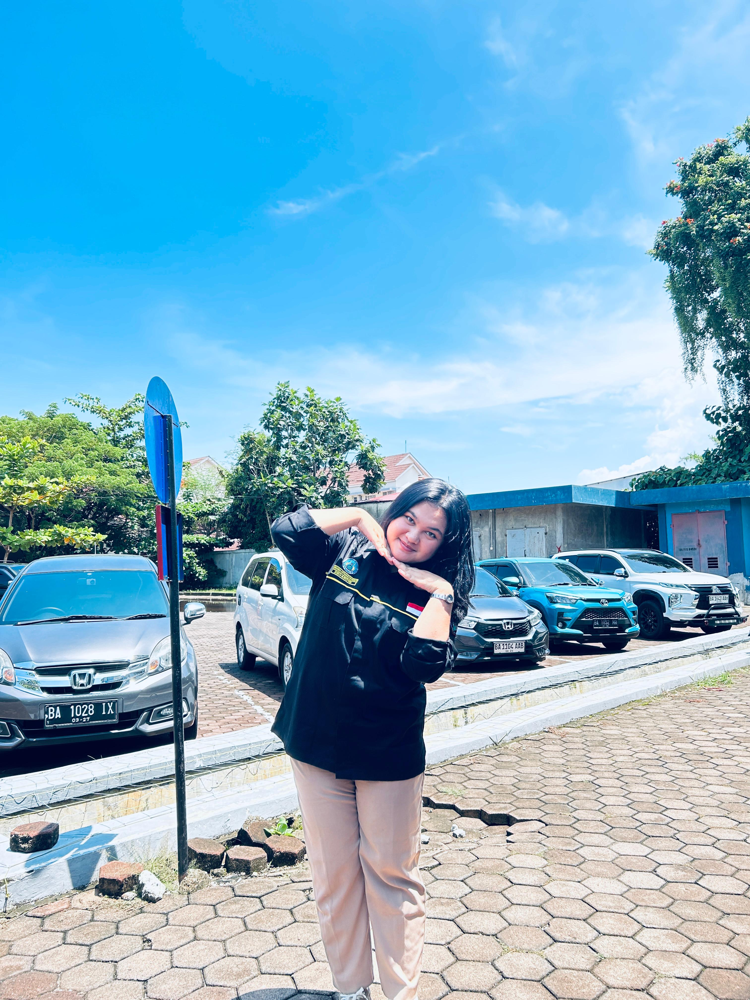

DINAMIKA HIDROSFER
Menganalisis Peran Air di Bumi, Siklus Hidrologi, Potensi Perairan Darat & Laut, serta Pengaruhnya Terhadap Kehidupan Manusia.
Identitas Peserta Didik
Isi data diri sebelum mengunduh sertifikat & evaluasi
Tujuan Pembelajaran (TP)
1. Siklus Hidrologi
Menganalisis tahapan siklus air (evaporasi, transpirasi, kondensasi, presipitasi, infiltrasi, limpasan) dan jenis siklus pendek, sedang, serta panjang.
2. Perairan Darat
Mengidentifikasi karakteristik sungai (pola aliran), jenis-jenis danau (tektonik, vulkanik), rawa, serta potensi air tanah (freatik & artesis).
3. Perairan Laut
Klasifikasi zona laut berdasarkan kedalaman (litoral, neritik, batial, abisal), morfologi dasar laut, dan dinamika air laut bagi kehidupan.
Klik salah satu proses di diagram
Pelajari proses hidrologi
Siklus hidrologi adalah sirkulasi air yang tidak pernah berhenti dari atmosfer ke bumi dan kembali lagi ke atmosfer melalui berbagai tahapan.
Pola Aliran Sungai
Air Tanah & Danau
- Air Tanah Freatik: Terletak di atas lapisan kedap air (impermeabel), mudah dicapai oleh sumur dangkal warga.
- Air Tanah Artesis: Terjebak di antara dua lapisan kedap air, tekanan tinggi dan sangat jernih.
Tektonik (pergeseran lempeng), Vulkanik (kawah gunung api), Tekto-vulkanik (contoh: Danau Toba), Karst/Dolina (pelarutan kapur).
Zona Laut Berdasarkan Kedalaman
Area pantai yang tergenang saat pasang dan kering saat surut.
Kaya terumbu karang & ikan karena sinar matahari masih menembus dasar.
Sinar matahari sangat minim, lereng benua yang curam.
Sangat dingin, tekanan air ekstrem, biota memiliki bioluminesensi.
Morfologi Dasar Laut
- Palung Laut (Trench): Jurang dasar laut yang sangat dalam dan curam (Contoh: Palung Mariana).
- Punggung Laut (Ridge): Pegunungan di dasar laut yang terbentuk dari aktivitas vulkanisme.
- Lubuk Laut (Basin): Cekungan lebar berdasar membulat di dasar laut.
Gim Edukasi Interaktif
Selesaikan ketiga tantangan untuk mengumpulkan skor maksimal (100)
Proses penguapan air yang berasal dari jaringan makhluk hidup (tumbuhan) dinamakan...
Jodohkan Istilah (Kiri) dengan Penjelasannya (Kanan)
Bobot: 30 PoinKlik satu item di sebelah kiri, kemudian klik pasangannya di sebelah kanan.
Klasifikasikan Kata/Istilah ke dalam Kategori yang Tepat
Klik item di bawah ini lalu pilih kategori tujuannya
Refleksi Pembelajaran
Sertifikat Kelulusan Modul
Geografi Kelas X (Fase E) - HidrosferDiberikan Kepada:
[Nama Siswa]
Nomor Absen: - • SMA Negeri
Dinyatakan telah MENYELESAIKAN seluruh rangkaian Media Pembelajaran Interaktif Geografi pada materi Dinamika Hidrosfer dan Kehidupan dengan perolehan nilai:
Tanggal Diterbitkan:
12 September 2026
Guru Mata Pelajaran Geografi
Guru Geografi Fase E

Miranda Hotmauli Manalu
25045019
Pendidikan Geografi
Universitas Negeri Padang
"Peneliti dan pengembang media pembelajaran interaktif berbasis web untuk meningkatkan engagement siswa dalam pembelajaran Geografi, khususnya materi Hidrosfer dan Dinamika Kehidupan di Bumi."